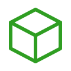
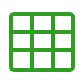
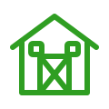
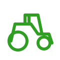
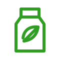
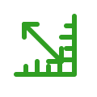
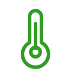
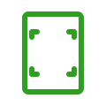
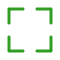

actions/add.svgBotões primários e inclusão de recursosactions/minus.svgRedução, exclusão de item ou decrementoactions/edit.svgEdição de registros e células da tabelaactions/trash.svgAção destrutiva e remoção de registrosactions/check.svgSucesso, confirmação e seleçãoactions/close.svgFechamento de modal, chip e toastactions/save.svgSalvar rascunho e dados de formulárioactions/print.svgImpressão no report vieweractions/download.svgExportação de relatório ou dadosactions/upload.svgImportação e envio de arquivoactions/refresh.svgAtualização de listas e dadosactions/search.svgCampos de busca e pesquisa no relatórioactions/filter.svgFiltros de grid e listagensactions/more-horizontal.svgMenu contextual de linhaactions/more-vertical.svgMenu contextual compactoactions/copy.svgDuplicação e cópia de conteúdoactions/attachment.svgAba de anexos e arquivosactions/external-link.svgDocumentação e links externosnavigation/chevron-up.svgCombobox, colapso e seleçãonavigation/chevron-down.svgCombobox e menus de seleçãonavigation/chevron-left.svgPaginação e navegaçãonavigation/chevron-right.svgPaginação e navegaçãonavigation/arrow-up.svgOrdenação e movimentonavigation/arrow-down.svgOrdenação e movimentonavigation/arrow-left.svgVoltar e navegarnavigation/arrow-right.svgAvançar e navegarnavigation/first-page.svgReport viewer e paginaçãonavigation/previous-page.svgReport viewer e paginaçãonavigation/next-page.svgReport viewer e paginaçãonavigation/last-page.svgReport viewer e paginaçãonavigation/expand.svgMaximizar painel ou visualizaçãonavigation/collapse.svgRestaurar painel ou visualizaçãonavigation/home.svgCard de fazenda e navegação inicialnavigation/menu.svgMenu compacto e ações agrupadasinterface/eye.svgExibição de senha e detalhesinterface/eye-off.svgOcultação de senhainterface/calendar.svgDatePicker e agendainterface/clock.svgTimePicker, duração e agendainterface/info-circle.svgTooltip e mensagens informativasinterface/help-circle.svgModal de confirmação e ajudainterface/success-circle.svgToast de sucesso e validaçãointerface/warning-triangle.svgToast, badge e validação pendenteinterface/error-circle.svgToast de erro e ação perigosainterface/lock.svgStatus bar e conteúdo protegidointerface/unlock.svgEstado liberadointerface/bell.svgAlertas da aplicaçãointerface/user.svgResponsável técnico e containterface/users.svgCard de clientes e equipesinterface/settings.svgPreferências e ajustesinterface/palette.svgSeleção de cores e temainterface/code.svgAcesso a exemplos da suíteinterface/book-open.svgAcesso à documentaçãointerface/document.svgTabs e arquivos genéricosinterface/document-text.svgRelatórios e conteúdo textualinterface/theme-sun.svgTema claro e condição ensolaradainterface/theme-moon.svgAlternância de temainterface/status-connected.svgStatus de conexão ativointerface/status-disconnected.svgStatus de conexão indisponíveldata/money-circle.svgReceita, custo e valor monetáriodata/shopping-cart.svgCard de pedidos e compras
Produto / Caixadata/package.svgProdutos, recursos e estoquedata/inventory-stack.svgInventário e itens armazenados
Tabela / Griddata/table-grid.svgData grid e visualização tabulardata/list.svgListagens e detalhesdata/report.svgReport viewer e indicadoresdata/chart-bar.svgCharts de barrasdata/chart-line.svgCharts de linhadata/chart-area.svgCharts de áreadata/chart-donut.svgCharts de pizza/donutdata/percent.svgProgresso e métricas percentuaisdata/sort-asc.svgOrdenação de colunasdata/sort-desc.svgOrdenação de colunasdata/clipboard-order.svgOrdens, situação e planejamentoagriculture/farm.svgResumo de fazenda e propriedade
Galpão / Celeiroagriculture/barn.svgPropriedades, depósitos e módulosagriculture/field.svgÁrea agrícola e produtividadeagriculture/plot.svgIdentificação de talhõesagriculture/leaf.svgCultura, safra e módulos agrícolasagriculture/soybean.svgCultura de soja e sementesagriculture/seedling.svgPlantio e produção
Tratoragriculture/tractor.svgMáquinas e recursos vinculadosagriculture/sprayer.svgAplicação de herbicida e equipamentos
Herbicida / Insumoagriculture/herbicide.svgRecursos químicos e insumos
Área estimadaagriculture/area-ruler.svgMedição de hectares e dimensõesagriculture/location-pin.svgPropriedade, talhão e endereçoagriculture/cloud-rain.svgCondição climática
Temperaturaagriculture/temperature.svgCondição climática e sensoresagriculture/harvest.svgSafra e produtividadecontrols/checkbox-checked.svgControle selecionadocontrols/checkbox-unchecked.svgControle não selecionadocontrols/radio-checked.svgOpção exclusiva selecionadacontrols/radio-unchecked.svgOpção exclusiva vaziacontrols/toggle-on.svgChave ligadacontrols/toggle-off.svgChave desligadacontrols/slider.svgControle de valor contínuocontrols/spinner.svgCarregamento circularcontrols/dots-loading.svgIndicador de carregamento compactocontrols/tag.svgTags, badges e chipscontrols/clipboard-check.svgConferência e checklistcontrols/flag.svgPrioridade e marcação de itemreport-viewer/zoom-in.svgZoom do relatórioreport-viewer/zoom-out.svgZoom do relatório
Ajustar páginareport-viewer/fit-page.svgEnquadramento do relatório
Tela cheiareport-viewer/fullscreen.svgVisualização expandidareport-viewer/file-pdf.svgExportação de relatório em PDFreport-viewer/page-search.svgBusca de conteúdo na página